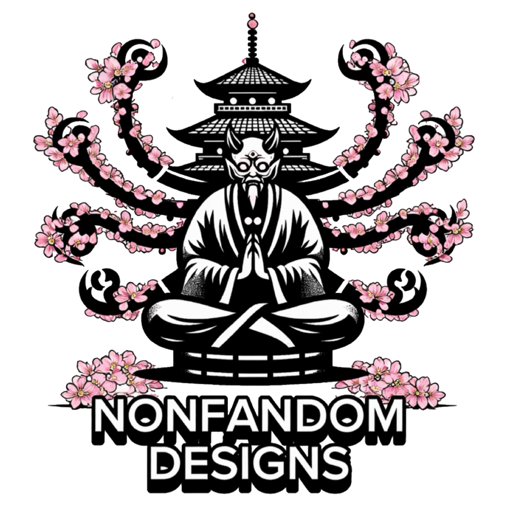
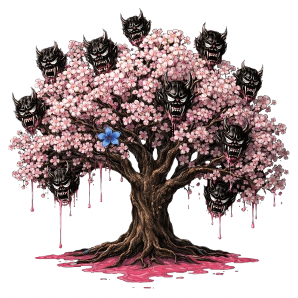

A PERSONALITY READING FROM YOMIZAKURA
The tree knows
many sides of you.
Beneath the blossoms, a reflection waits. Follow fifteen choices through your world and ours to discover the characters whose spirits echo your own.
Choose what feels most like you. There are no right answers.
Your answers stay in this browser. A reading for reflection and fun.
YOMIZAKURA

BENEATH THE BLOSSOMS
ONE TREE. FIFTEEN SPIRITS. YOUR STORY.
FOLLOW YOUR FIRST INSTINCT
Choose an answer to continue.
THE BLOSSOMS REMEMBER
Your reflection is taking shape.
Three spirits stir beneath the tree.
YOUR YOMIZAKURA READING
Three spirits.
One unfolding story.
The tree has chosen. Turn each card to meet your reflection.
How your reading works
Each answer resonates with three characters at different strengths (4, 2, and 1). Scores account for how often each character can receive points, so extra supporting appearances do not give an unfair advantage.
Your True Match has the strongest overall resonance; Kindred Spirit is the next closest. Hidden Nature is a different character drawn from your three deeper values answers. It reflects a quieter value, not a diagnosis or a claim about your unconscious. All fifteen characters can appear in any role.
Close scores are resolved by the number of strong resonances, then a consistent answer-based tie break. These are fictional reflections, not scientifically validated personality categories. Shared links contain only the three revealed character names, never your answers.